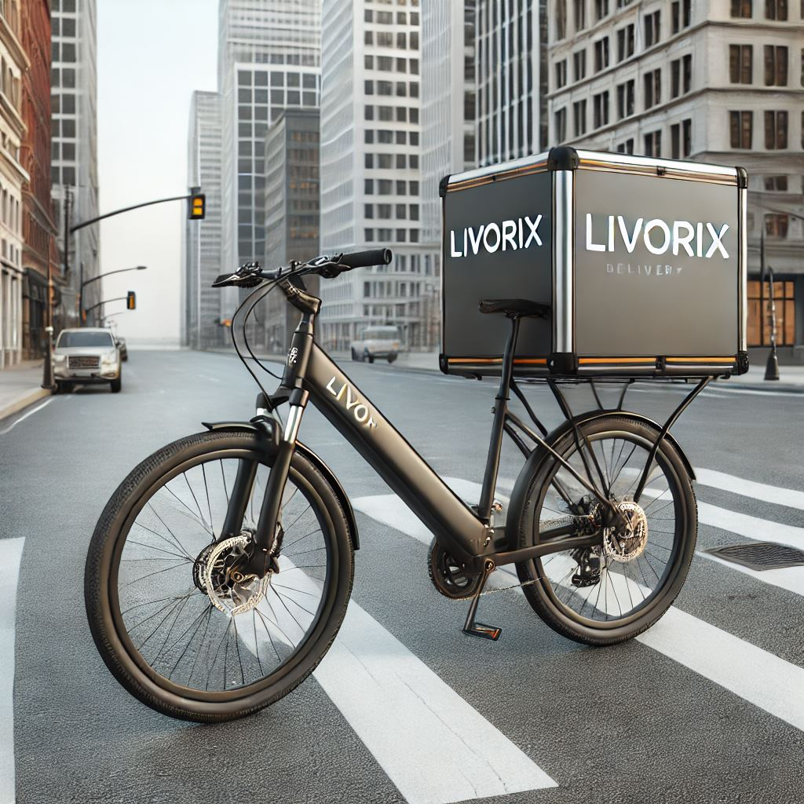
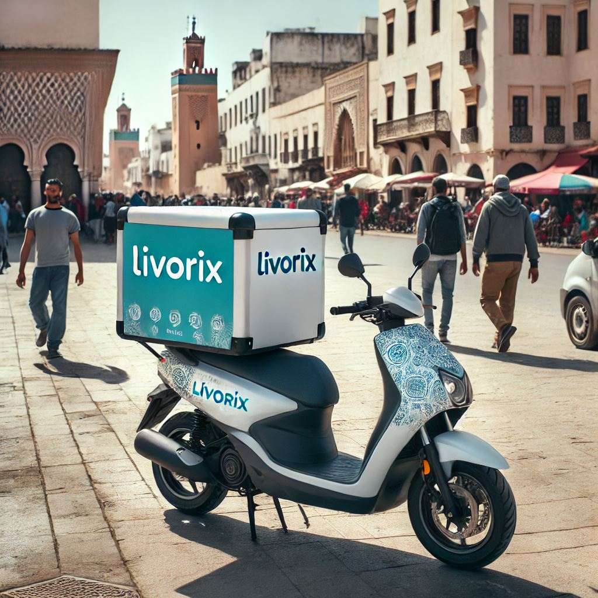
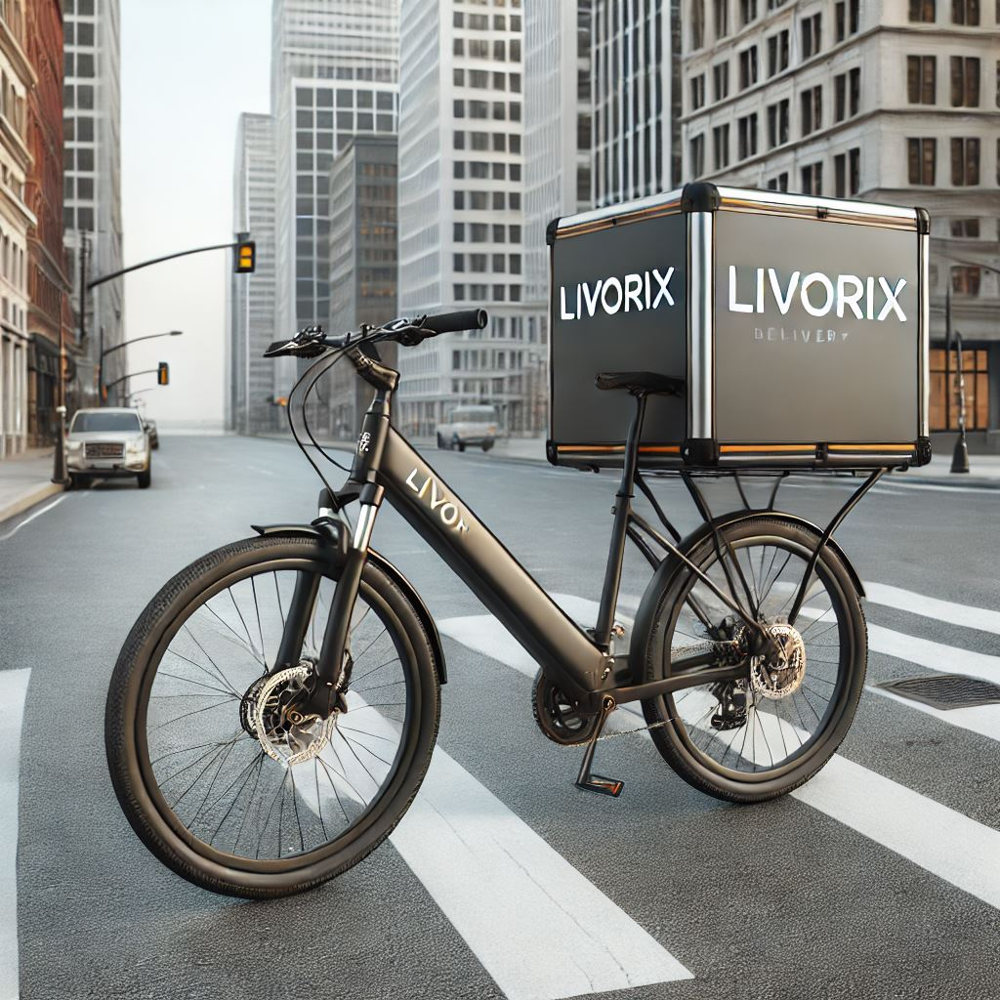
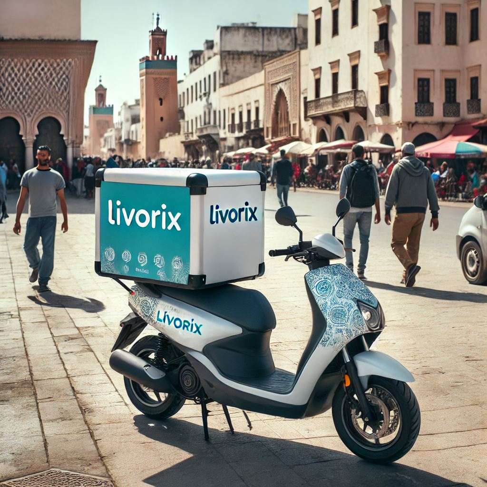

Bienvenue sur Livorix

Livorix est une application innovante dédiée à la gestion des services de livraison au Maroc. Elle optimise la gestion des commandes, le suivi des livraisons et la coordination entre les parties prenantes. Livorix offre une expérience utilisateur fluide et intègre des solutions modernes pour répondre aux attentes des entreprises et des particuliers.
Nos Statistiques

Nos Services
Livorix offre une gamme complète de solutions de livraison adaptées à vos besoins, que ce soit pour des colis volumineux ou des livraisons rapides en centre-ville. Nos livreurs utilisent divers moyens de transport pour garantir une livraison efficace et rapide :
- Camions pour les livraisons de gros volumes.
- Vélos pour les livraisons écologiques et rapides en centre-ville.
- Trottinettes pour une mobilité optimale dans les zones urbaines denses.

Zones de Service
Actuellement, Livorix opère dans les villes de Casablanca et Rabat, avec des plans d'expansion imminents vers d'autres grandes villes marocaines. Notre objectif est de couvrir l'ensemble du territoire national pour offrir un service de livraison fiable et rapide à tous nos clients.
Pourquoi choisir notre application ?
Moyen de livraison
 


